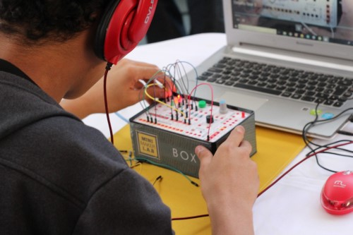
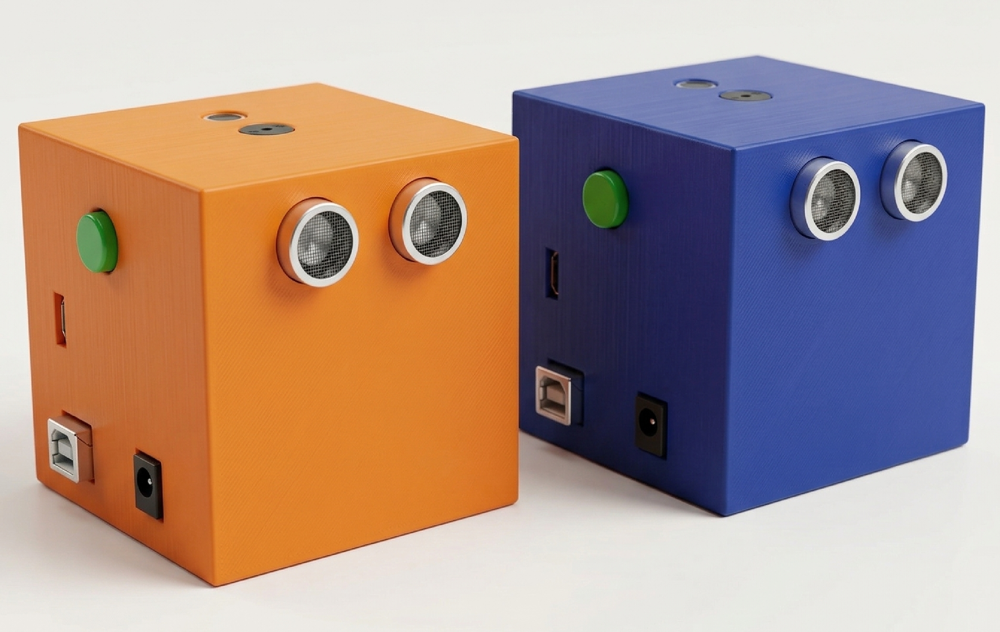

Aprender explorando, criando e inovando
O MakerLab3D é uma solução educacional completa, composta por um ecossistema integrado de recursos físicos e digitais, que possibilita a implementação de um espaço maker educacional, combinando experimentação prática, aprendizagem criativa e inovação tecnológica.
Mais do que conteúdo: experiência, prática e protagonismo do aluno.

Prática Real
Autoridade
Inovação em educação tecnológica desde 2018
O MakerLab3D é resultado da pesquisa e atuação de uma equipe de doutores especialistas em
educação tecnológica maker, dedicada ao desenvolvimento de soluções inovadoras para o ensino.
Acelerado pelo SENAI CIMATEC, o projeto integra robótica, eletrônica, impressão
3D e computação desplugada em uma proposta educacional estruturada e aplicável à realidade das
escolas.
Essa base tecnológica e pedagógica sustenta uma solução completa, preparada para ser
implementada com consistência e impacto no contexto educacional.
Solução completa para transformar a educação nas escolas
O MakerLab3D foi concebido para apoiar as escolas na formação integral do estudante, alinhando teoria e prática por meio de experiências de aprendizagem significativas. Em consonância com a BNCC, a proposta desenvolve competências cognitivas, comunicativas e socioemocionais, preparando o aluno para pensar, se expressar, colaborar e resolver problemas em contextos reais.

Kit Educacional Maker
Componentes eletrônicos modulares e seguros para criação imediata.

Desafios Gamificados
Cards que estimulam a lógica e a superação de problemas de forma lúdica.

Portal Educacional
Ambiente digital com tutoriais e suporte para alunos e professores.

Livro "Faça, Crie e Inove"
Material didático exclusivo que guia a jornada maker passo a passo.

Trilhas de 40 Semanas
Planejamento completo para um ano letivo inteiro de atividades.

Formação de Facilitadores
Treinamento capacitado para que professores dominem a cultura maker.
Produtos Educacionais Exclusivos

BOX MakerLab3D
Kit com componentes eletrônicos e desafios práticos focados em hardware.

Robô Cube
Robótica educacional com programação prática e interação com sensores.

Code Table
Computação desplugada para desenvolver lógica sem necessidade de telas.

Unplug
Atividades de pensamento computacional sem uso de tecnologia digital.

Craft
Construção criativa com montagem física, modelagem e integração com projetos.
Uma jornada de aprendizagem baseada em ação e descoberta

O método Maker Cognitivo é estruturado como um percurso progressivo de aprendizagem, no qual o estudante evolui por meio de desafios, compreensão e aplicação prática do conhecimento.
Cada etapa representa um avanço no desenvolvimento cognitivo: do primeiro contato com o problema até a construção de soluções, promovendo autonomia, pensamento crítico e criatividade.
Essa jornada foi desenvolvida para transformar o aluno em protagonista, incentivando-o a experimentar, testar, refletir e aprender de forma ativa e significativa.
Aprendizagem em níveis progressivos
O MakerLab3D é fundamentado no Método Maker Cognitivo, uma abordagem estruturada que integra experimentação prática, reflexão e construção de soluções. Por meio de uma jornada progressiva, os estudantes desenvolvem conhecimentos, habilidades e autonomia para criar, testar e inovar.
1. Explorador
Primeiro contato com conceitos básicos, montagem guiada e experimentação sensorial.
2. Criador
Construção de projetos complexos com lógica, circuitos eletrônicos e programação inicial.
3. Inovador
Criação de soluções autorais conectadas com problemas reais da sociedade.
Depoimentos
As experiências de quem conhece!
“O acesso a tecnologias formativas e motivadoras é o futuro para formar pessoas criativas e autodidatas. O MakerLab 3D está na vanguarda trazendo a robótica educacional e a impressão 3D neste processo. Os produtos são fantásticos e o portal traz um conteúdo com vídeos e aulas que permitem o aprimoramento do raciocínio lógico de forma divertida.”
O SENAI CIMATEC tem orgulho de ser parceiro do MakerLab 3D, apoiando no desenvolvimento, na validação da solução e na aceleração do negócio. Trata-se de um exemplo de um projeto acadêmico que virou uma solução de mercado competitiva e inovadora, em menos de 12 meses.
O MakerLab 3D consegue inovar tocando em um dos pontos mais importantes para a transformação da nossa sociedade, ele mexe com a auto estima dos jovens. Desperta seu lado criativo e inovador, e potencializa seus ideais. O futuro da nossa sociedade está nos sonhos dos nossos jovens.
Clipping
MakerLab3D na mídia
Assista às reportagens
Leve o MakerLab3D para sua escola
Implemente uma solução educacional prática, inovadora e alinhada com o futuro da educação.
makerlab3d.ba@gmail.comWhatsApp: (71)99139-3302